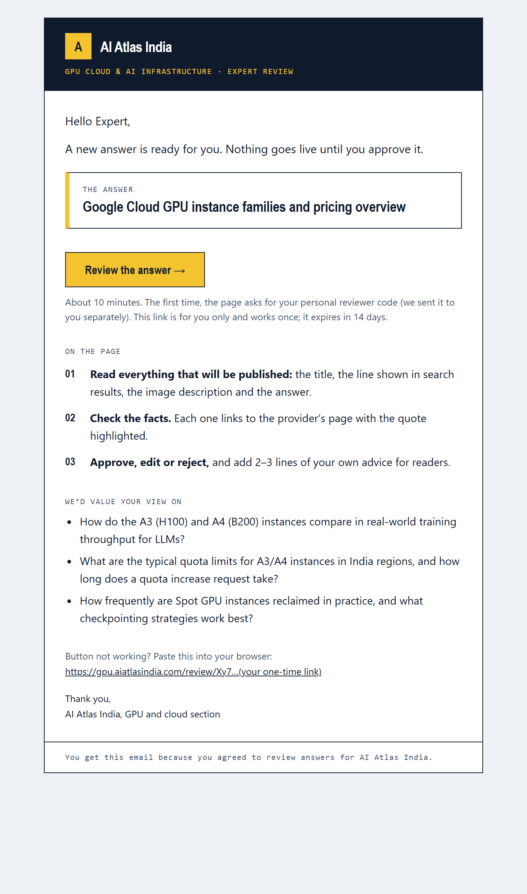
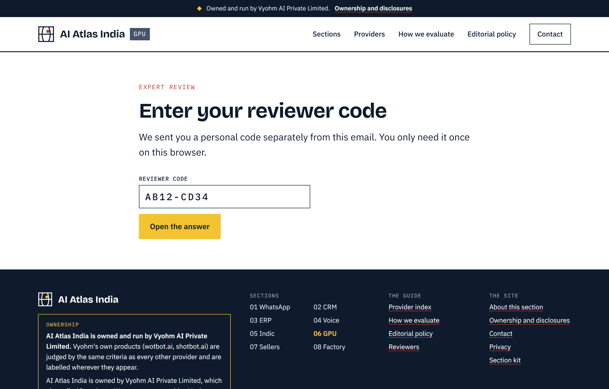
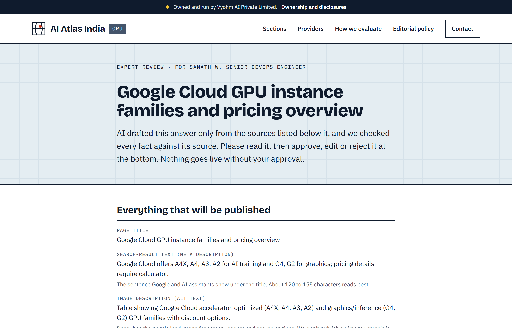
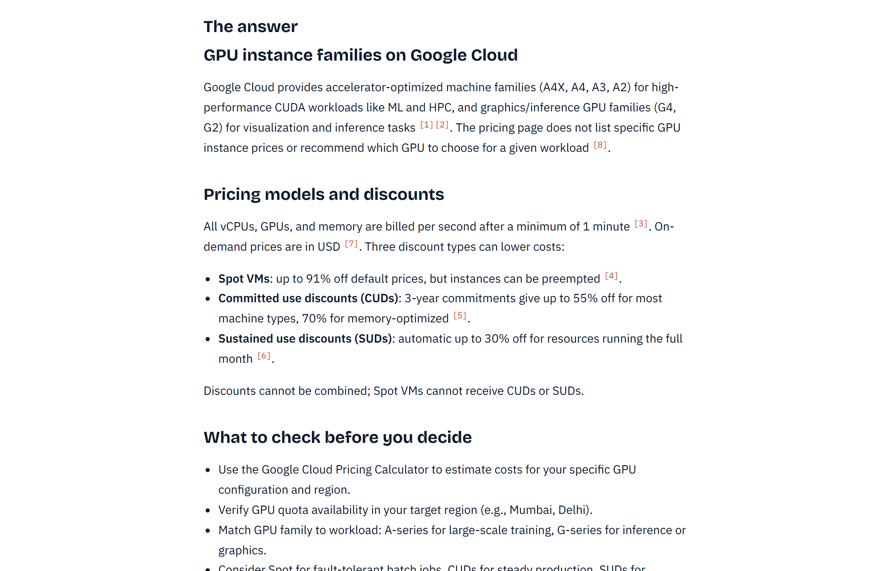
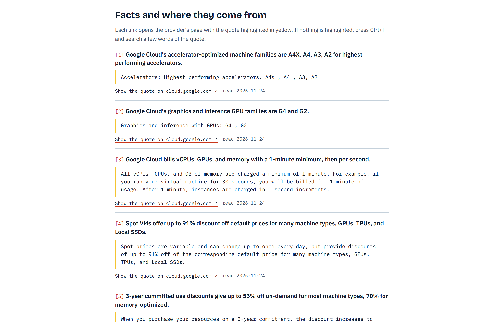
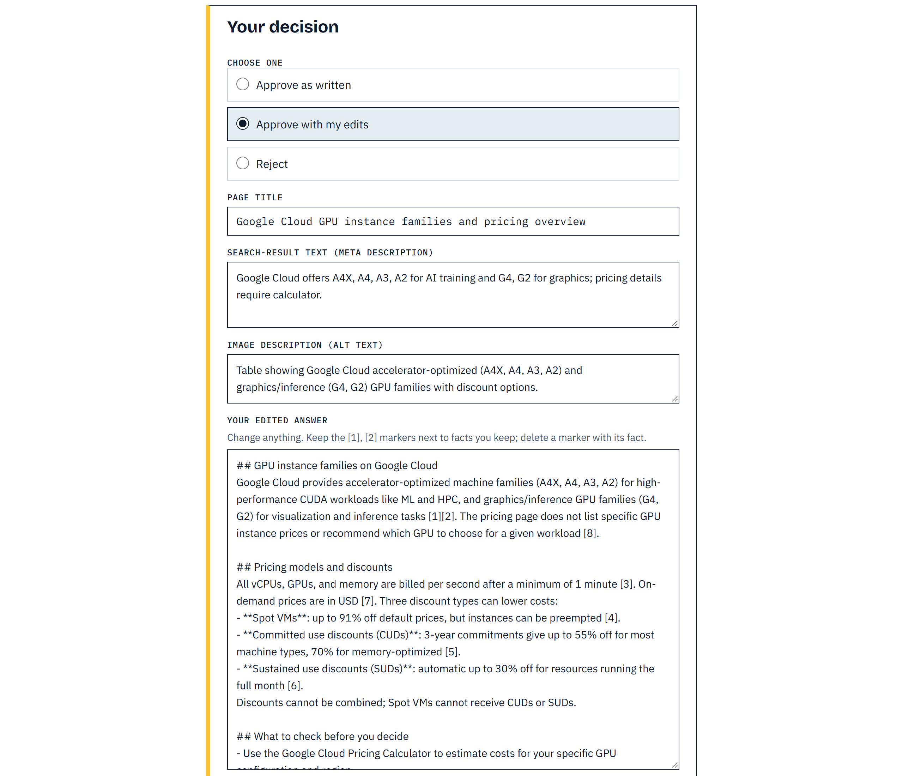
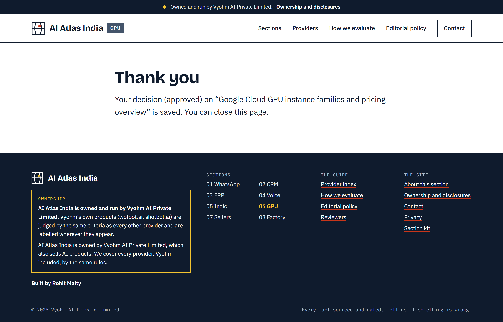
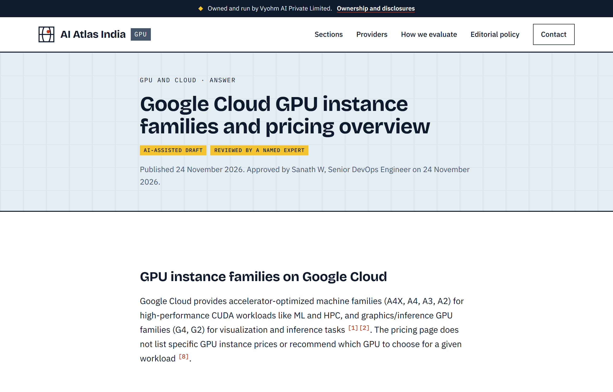
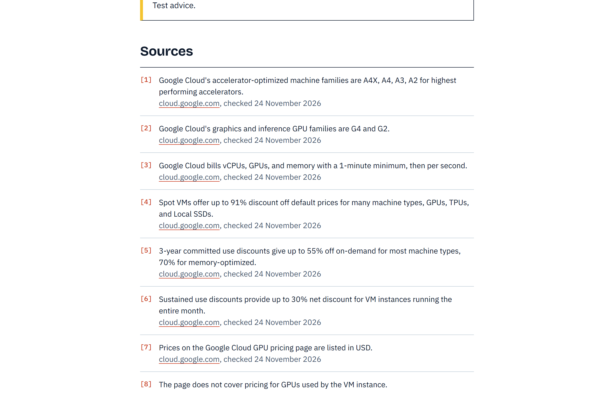

GPU cloud & AI infrastructure · Expert reviewer guide
A short, step-by-step guide to the review page you will use. Every screen in this guide is the real review page, shown with sample data.
AI Atlas India (aiatlasindia.com) is an independent guide that helps Indian business owners choose AI providers. Our section, GPU cloud and AI infrastructure, lives at gpu.aiatlasindia.com and answers the real questions people ask before they rent or buy GPU compute.
An AI writes the first draft of each answer, using only the provider pages we give it, and every fact links to the exact quote it came from. Nothing is published until a real expert approves it. That expert is you.
Read the answer, check that it is correct and useful, then approve it, approve it with your edits, or reject it. Your name appears on every answer you approve.
AI Atlas India is owned and run by Vyohm AI Private Limited. This section was built by Rohit Maity for Vyohm AI's content-engine assignment.
Overview
The pace
| Check | What to look for |
|---|---|
| Correct | Does each claim say what its quote says? Is anything out of date, misleading or missing an important caveat? |
| Useful | Would an Indian business owner or a small tech team actually be helped by this answer? |
| Fair | No provider is favoured without a reason. Vyohm's own products get no special treatment. |
| Clear | Plain words, a title that says what the page answers, a sensible search-result line. |
| Your experience | The 2–3 lines of advice are the most valuable part: what you have seen work (or fail) in practice. |
Step 01

Step 02

Step 03


Step 04

Step 05
| Choose | When, and what happens |
|---|---|
| Approve as written | It is correct and useful as it is. It goes to the admin to publish. |
| Approve with my edits | Mostly right, but you want to change something. Editable boxes open for the title, the search-result text, the image description and the answer. Only what you change is saved, and the AI's version is kept for the record. |
| Reject | Wrong, misleading or not useful. Write one or two lines on why; we write a new version from better sources and may send it to you again. |

Step 06


On the live site

Thank you. Your review is what turns an AI draft into something a business owner can trust.